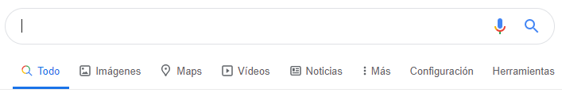
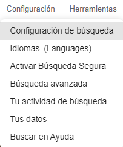

En muchas ocasiones has necesitado realizar búsquedas en Internet, para ello has seleccionado un buscador y has introducido las palabras de búsqueda. Sencillo ¿verdad? Pero no siempre obtengo lo que busco, o nos perdemos entre tantas páginas sin obtener buenos resultados.
¿Cómo puedo hacer la búsqueda en internet más eficiente?
Teniendo en cuenta que cada buscador utiliza unos operadores específicos para realizar búsquedas más precisas y que Google es el principal buscador utilizado a día de hoy, nos vamos a centrar en los operadores simples que utiliza este.
Antes de detallar estos operadores es conveniente conocer el manejo de este buscador.

Búsquedas informativas
Las búsquedas informativas se refieren a todas las consultas que realizan los usuarios con el objetivo de conseguir información sobre un tema determinado.
A diferencia de las búsquedas transaccionales que veremos posteriormente, no hay una intención de compra asociada sino un deseo de información.
A continuación, veremos en qué consiste cada una de ellas.
1.- Todo. En esta sección es donde más información vamos a encontrar, incluyendo datos que pertenecen a todas las otras secciones que veremos a continuación.
2.- Imágenes. Un truco muy usado en esta sección es el de arrastrar cualquier producto al buscador para ver los precios o los puntos de venta.
3.- Maps. Se accede al servicio de Google Maps.
4.- Vídeos. En esta sección, además de encontrar vídeos, también suelen aparecer entradas a webs aunque éstas no incluyan vídeos.
5.- Noticias. Aunque, supuestamente, Google cerró su “Google News en España” el 16 de Septiembre de 2014” por la “Ley de propiedad Intelectual”, aún podemos ver tanto en España como en otros países información directa de las noticias.
Búsquedas transaccionales
Estas búsquedas se encuentran en el apartado Más. Esta sección cambia en función de la búsqueda realizada.
1.- Shopping. En esta sección podemos filtrar las búsquedas según diferentes criterios: precio, vendedor, reseñas, etc.
2.- Libros. Esta función está enfocada principalmente a la compra de libros en formato físico o digital.
3.- Vuelos. Esta opción funciona como un comparador de tarifas de viajes, permitiéndonos seleccionar nuestros destinos y fechas y ofreciéndonos las diferentes opciones disponibles.
4.- Finance. Incluye titulares de negocios y empresas con sus decisiones financieras y eventos.
Configuración
Esta sección tiene parámetros que pueden cambiar los resultados del resto de tus búsquedas. De ahí que sea muy importante configurarla según lo que quieras que te muestre Google en el futuro.

1.- Configuración de búsqueda. En este punto tendremos varias opciones como activar la búsqueda segura, decidir el número de resultados que se mostrarán por página, hacer que estos se abran en una pestaña nueva, configurar la región de búsqueda, mostrar resultados privados o utilizar la síntesis de voz en las respuestas.
2.- Idiomas. Podremos escoger entre una lista de idiomas en cuál o cuáles queremos que se muestren los resultados, teniendo la posibilidad de seleccionar varios a la vez.
3.- Activar búsqueda segura. Haciendo clic en este filtro te evitas que se muestren contenidos violentos y/o para adultos.
4.- Búsqueda avanzada. Esta opción nos ofrece diferentes filtros para personalizar la búsqueda. Podemos incluir o excluir palabras o números, seleccionar idiomas o regiones, realizar búsquedas avanzadas en Google por un tipo de formato determinado, etcétera.
5.- Actividad de búsqueda. Se trata de un registro que realiza Google sobre la información que buscas o los resultados en los que haces clic con el objetivo de mejorar tu experiencia. En esta página puedes consultar tus datos, eliminarlos o activar el borrado automático.
6.- Tus datos. En este apartado puede consultarse o eliminarse la actividad de búsqueda, además de acceder a la personalización de otras opciones de privacidad.
7.- Buscar en la ayuda. Da acceso a otro buscador en el que podemos encontrar solución a problemas relacionados con el uso de Google y sus buscadores, opciones de personalización, configuración de cuentas, etcétera.
Herramientas
Ayudan muchísimo a afinar en los resultados que deseas, por eso, es tan importante conocer este apartado, lo cambia todo.
1.- Cualquier idioma. Por defecto, Google te mostrará todos los resultados relacionados con tu búsqueda.
En este punto podrás seleccionar la opción de búsqueda avanzada en Google de sólo páginas en tu idioma
2.- Cualquier fecha. Tendremos la opción de afinar la búsqueda por franja horaria, escogiendo entre las que nos propone Google (cualquier fecha, última hora, últimas 24 horas, última semana, último mes, último año) o decidir nuestro propio intervalo.
3.- Todos los resultados. Haciendo clic en esta pestaña podremos seleccionar la opción “verbatim” en la que Google desactiva sus funciones y busca literalmente el término introducido. Es decir, perdemos la corrección ortográfica automática, el uso de sinónimos, los resultados relacionados o la búsqueda de palabra con la misma raíz o de la misma familia.